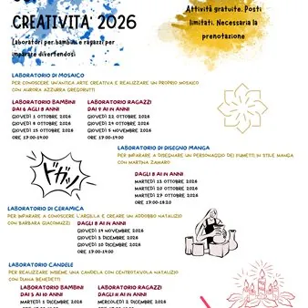

gio 1 ott
Apprendere con creatività
Laboratori per bambini e ragazzi per imparare divertendosi! Un ricco calendario di attività gratuite dedicate a bambini e ragazzi, per stimolare fantasia e creatività attraverso antiche arti e nuove tecniche. Sala Ceschia – Ufficio Informagiovani del Comune di Majano (ingresso…
 Indicazioni
Indicazioni
- Costi e prenotazioni
- Costo non indicato · Prenotazione non indicata
- Programma
- Programma da verificare. Apri la fonte ufficiale per orari e possibili aggiornamenti.
- In caso di maltempo
- Nessuna indicazione specifica pubblicata.
- Note
- Acquisito automaticamente dalla fonte.
L’EVENTO
Descrizione completa
Laboratori per bambini e ragazzi per imparare divertendosi!
Un ricco calendario di attività gratuite dedicate a bambini e ragazzi, per stimolare fantasia e creatività attraverso antiche arti e nuove tecniche.
Sala Ceschia – Ufficio Informagiovani del Comune di Majano
(ingresso dal cortile interno del Municipio, Piazza Italia 38)
PROGRAMMA:
𝙇𝙖𝙗𝙤𝙧𝙖𝙩𝙤𝙧𝙞𝙤 𝙙𝙞 𝙈𝙤𝙨𝙖𝙞𝙘𝙤
𝙘𝙤𝙣 𝘼𝙪𝙧𝙤𝙧𝙖 𝘼𝙯𝙯𝙪𝙧𝙧𝙖 𝙂𝙧𝙚𝙜𝙤𝙧𝙪𝙩𝙩𝙞
Bambini 6-8 anni → Giovedì 1 / 8 / 15 Ottobre – ore 17.00-19.00
Ragazzi 10-16 anni →Giovedì 22 / 29 Ottobre / Giovedì 5 Novembre – ore 17.00-19.00
𝙇𝙖𝙗𝙤𝙧𝙖𝙩𝙤𝙧𝙞𝙤 𝙙𝙞 𝘿𝙞𝙨𝙚𝙜𝙣𝙤 𝙈𝙖𝙣𝙜𝙖
𝙘𝙤𝙣 𝙈𝙖𝙧𝙩𝙞𝙣𝙖 𝙕𝙖𝙢𝙖𝙧𝙤
Ragazzi 8-14 anni → Martedì 13 / 20 / 27 Ottobre – ore 17.00-18.20
𝙇𝙖𝙗𝙤𝙧𝙖𝙩𝙤𝙧𝙞𝙤 𝙙𝙞 𝘾𝙚𝙧𝙖𝙢𝙞𝙘𝙖
dagli 8 ai 14 anni → Giovedì 14 Novembre / Giovedì 3 - 10 Dicembre – ore 17.00-19.00
𝙇𝙖𝙗𝙤𝙧𝙖𝙩𝙤𝙧𝙞𝙤 𝘾𝙖𝙣𝙙𝙚𝙡𝙚
𝙘𝙤𝙣 𝘿𝙞𝙖𝙣𝙖 𝘽𝙚𝙣𝙚𝙙𝙚𝙩𝙩𝙞
Bambini 5-10 anni → Martedì 1 dicembre – ore 17.00-19.00
Ragazzi 11-14 anni → Mercoledì 2 dicembre – ore 17.00-19.00
𝐀𝐭𝐭𝐢𝐯𝐢𝐭à 𝐠𝐫𝐚𝐭𝐮𝐢𝐭𝐞 – 𝐏𝐨𝐬𝐭𝐢 𝐥𝐢𝐦𝐢𝐭𝐚𝐭𝐢 – 𝐏𝐫𝐞𝐧𝐨𝐭𝐚𝐳𝐢𝐨𝐧𝐞 𝐨𝐛𝐛𝐥𝐢𝐠𝐚𝐭𝐨𝐫𝐢𝐚
Tel. 0432 959078
Mail: biblioteca@comune.majano.ud.it
IL PROGRAMMA
Programma e orari
Appuntamenti raccolti dalle fonti elencate. Dove manca un orario, non è ancora disponibile in questa scheda.
Programma pubblicato
- Dal 2026-10-01 al 2026-10-01
INFORMAZIONI UTILI
Prima di partire
- Controllare la fonte prima di partire.
ORGANIZZAZIONE